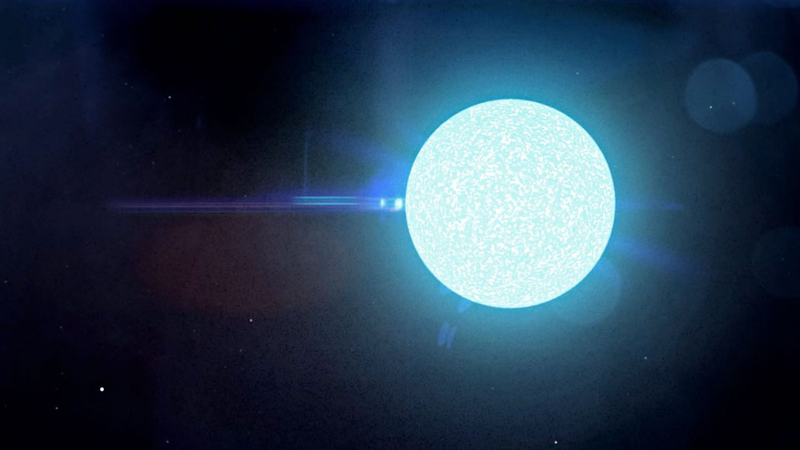

Gwiazdy neutronowe - najgęstrze obiekty kosmiczne
Czym są gwiazdy neutronowe?
Gwiazdy neutronowe to jedne z najgęstszych i najmniejszych znanych obiektów kosmicznych, powstałe w wyniku supernowej. Ich masa jest porównywalna do masy Słońca, ale jest skompresowana do rozmiarów miasta, co skutkuje gęstością materii rzędu kilku miliardów ton na centymetr sześcienny. Gwiazdy neutronowe posiadają ogromne pole magnetyczne, które powoduje emisję silnych wiązek promieniowania elektromagnetycznego, w tym promieni rentgenowskich i gamma. Są one również źródłem pulsarów - regularnych impulsów promieniowania, gdy gwiazda neutronowa obraca się wokół swojej osi.
Jak powstają?
Gwiazdy neutronowe powstają w wyniku supernowej, która następuje po wyczerpaniu się paliwa jądrowego wewnątrz masywnej gwiazdy. Podczas supernowej ogromne ilości materii zostają wyrzucone w przestrzeń kosmiczną, a jednocześnie w centrum gwiazdy dochodzi do kolapsu grawitacyjnego. Grawitacja powoduje, że ogromna masa zostaje skompresowana do niewyobrażalnie małych rozmiarów, tworząc gwiazdę neutronową. Ten proces jest również odpowiedzialny za wyzwolenie ogromnej ilości energii, która jest widoczna jako jasna eksplozja.
